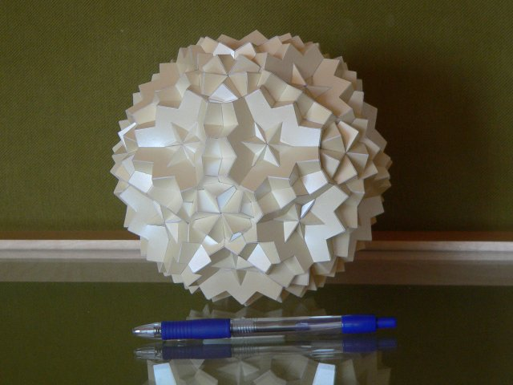
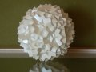
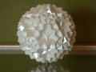
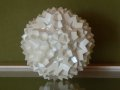

Compound of 30 Cubes: 30A | A5xI / C2xI | μ7

This is a compound of 30 cubes belonging to the symmetry group 30 | A5 x I / C2 x I / μ, as described in H.F.Verheyen's Symmetry Orbits. The angle μ uniquely identifies one compound in the group and may vary between 0 and 45 degrees (excluding 0 and 45 degrees). For some angles 'μ' the compound has some special properties. For this compound the angle μ = acos(√(5+√5)/√10) and for that angle the compound can be divided into six base elements: 5 | D20 x I / D4 x I, for which each order 20 symmetry axis shares an order 5 symmetry axis with the compound. The "C2" in the symmetry group means that each order 2 symmetry axis of the compound is shared by two order 2 symmetry axes of two base elements.
The model itself is built with 250 gr/m2 Chromolux paper using the colour "pearl". This colour was chosen, because the model was a wedding present for two friends of mine. I thought it was not fitting to use another colour and I am pretty satisfied with the result. Since the model is quite small for 30 cubes it was difficult to get all the edges straight, though I don't think that my friends will complain... though ;)
Here are some more pictures of the model (click on the images for a bigger picture):
-

Taken into an order 2 symmetry axis.
-

Taken into an order 3 symmetry axis.
-

Taken into an order 5 symmetry axis.
{kind=link}
{kind=link}
{kind=link}
A complete table about cube compounds can be found here here.
Last Updated
2018-05-31